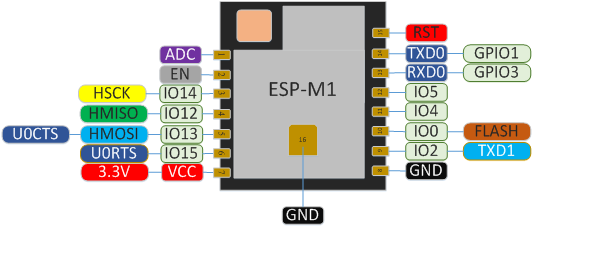
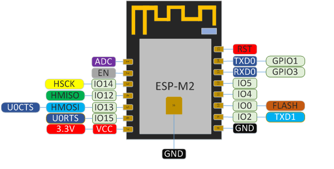
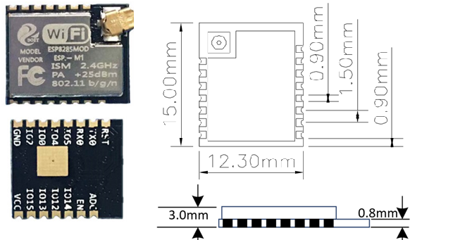
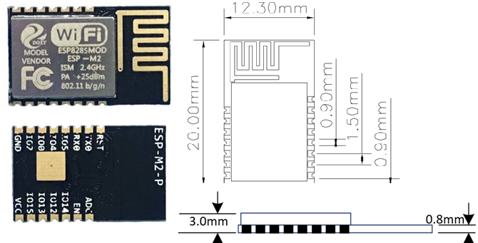
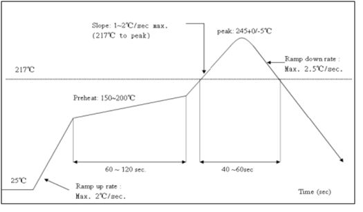
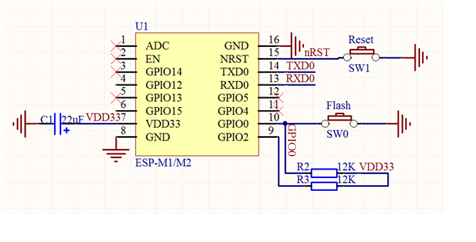

3. ESP-M1/M2¶
The sell information can be visited at our link: M1: www.vvdoit.com, and M2 www.vvdoit.com
3.1. Introduction¶
The WiFi module ESP-M is manufactured by using a high-performance chip ESP8285. This small chip is encapsulated an enhanced Tensilica’sL106 diamond series 32-bit kennel CPU with a SRAM. Thus, ESP8285 has the complete function Wi-Fi function; it not only can be applied independently, but can be used as a slaver working with other host CPU. When ESP8285 is applied as a slaver, it can start from the onboard Flash. The built-in high-speed buffer is not only benefit to improve the system performance, but optimize the store system. In addition, ESP8285 can be used as Wi-Fi adapter by SPI/SDIO or I2C/UART interface, when it is applied to other MCU design.
The ESP-M module supports the standard IEEE802.11 b/g/n/e/i protocol and the complete TCP/IP protocol stack. User can use it to add the WiFi function for the installed devices, and also can be viewed as a independent network controller. Anyway, ESP-M module provides many probabilities with the best price.
3.2. Features¶
SOC characteristics¶
- Built-in Tensilica L106 ultra-low power consumption 32-bit cpu, the main frequency can be 80MHz and 160MHz, also support RTOS;
- Built-in TCP/IP protocol stack;
- Built-in 1 channel 10-bit high precision ADC;
- The outside interfaces have HSPI, UART, I2C, I2S, IR Remote Control, PWM, GPIO;
- The deep-sleep current is about 10uA, and the cut-off current is smaller than 5uA;
- Can be wake-up within 2 ms, and connect to transmit data package;
- the consume power is smaller than 1.0mW (DTIM3) when at standby status;
- built-in 1M byte for SPI Flash.
Wi-Fi characteristics¶
- Support 802.11 b/g/n/e/i
- Support three modes: Station, SoftAP, and SoftAP+STA;
- SupportWi-Fi Direct(P2P);
- Support hardware acceleration for CCMP (CBC-MAC, computation mode), TKIP (MIC, RC4), WAPI(SMS4), WEP(RC4), CRC;
- P2P find, P2P GO mode/GC mode and P2P power management;
- WPA/PA2 PSK and WPS;
- Support 802.11 i security: pre-certification and TSN;
- Support 802.11n (2.4 GHz);
- 802.1h/RFC1042 frame encapsulation;
- Support seamless roam;
- Support AT remote updation and cloud OTA updation;
- Support SmartConfig function for Android and iOS device SmartConfig.
3.3. Peripheral for Module¶
- 2*UART;
- 1*En;
- 1*ADC;
- 1*wakeup pin;
- 1*HSPI;
- 1*I2C;
- 1*I2S;
- MAX 10* GPIOs;
- Working temperature: -40℃-125℃
Module size: * 12.3*mm*15mm; (M1 version) * 12.3*mm*20mm; (M2 version)
3.4. Application¶
- Serial Transparent transmission;
- Smart power plug/Smart LED light;
- Sensor networks;
- Wearable electronics;
- Securit ID label;
- Wireless location recognition;
- Wireless location system beacon;
- WiFi prober;
- Mesh networks;
- Industrial wireless control.
3.5. Module Type¶
| Name | Antenna Type |
|---|---|
| ESP-M1 | IPEX external antenna |
| ESP-M2 | PCB on board antenna |
3.6. Paramters¶
| Types | items | Parameters |
|---|---|---|
| WiFi | Frequency Scope | 2.4G~2.5G(2400M~2483.5M) |
| Transmit Power | 802.11b: +20 dBm | |
| 802.11g: +17 dBm | ||
| 802.11n: +14 dBm | ||
| Receiving sensitivity | 802.11b: -91 dbm (11Mbps) | |
| 802.11g: -75 dbm(54Mbps) | ||
| 802.11n: -72 dbm(MCS7) | ||
| Antenna | PCB onboard antenna | |
| Hardware | CPU | Tensilica L106 32 bit MCU |
| Perpherl | UART/SDIO/SPI/I2C/I2S/IR control | |
| GPIO/ADC/PWM/SPI/I2C/I2S | ||
| Working voltage | 2.5V ~ 3.6V | |
| Working current | Average current: 80 mA | |
| Working temperature | -40°C ~85°C | |
| Environment temperature | -40°C ~ 85°C | |
| Size | 12mm x 15mm x 3mm | |
| Software | Wi-Fi mode | Station/SoftAP/SoftAP+Station |
| Security mode | WPA/WPA2 | |
| Encryption type | WEP/TKIP/AES | |
| Update firmware | UART Download/OTA (by internet) | |
| Software develop | Non-RTOS/RTOS/Arduino IDE etc. | |
| Network protocol | IPv4, TCP/UDP/HTTP/FTP/MQTT | |
| User configuration | AT+command/cloud sever/Android/iOS APP |
PINs Definition
PINs definition of ESP-F can be shown in the following.
Pins definition for ESP-M1 Module
Pins definition for ESP-M2 Module
Selection of Working Mode¶
Working mode and definition of pins:¶
| Mode | IO0 | IO1 |
|---|---|---|
| UART download | low | high |
| FlashBoot mode | high | high |
Function Definition of Module Pins¶
| Num | Pin | Type | Function |
|---|---|---|---|
| 1 | RXD | I/O | GPIO3; able to used as UART Rx for building in Flash |
| 2 | IO0 | I/O | GPIO0;SPI_CS2; already connected to pull-up resistors |
| 3 | IO2 | I/O | GPIO2; UART1_TXD; already connected to pull-up resistors |
| 4 | GND | p | GND |
| 5 | VCC | p | Power for module: 3.3V |
| 6 | RST | I | enable with low power, Reset; already connected to pull-up resistors |
| 7 | EN | I | Enable, Working with high power; chip closed with low power |
| 8 | TXD | I/O | GPIO1; able to built in Flash as UART Tx |
3.7. Shape and Size¶
Shape and size for this module can be shown as follows. Its size is 16mm*24mm*3mm, and the Flash is 4M bytes (32Mbits), together with the following picture.
ESP-M1 Module
ESP-M2 Module
Size of ESP-M1 module¶
| Length | Width | Height | PAD Size(bottom) | Distance between pins |
|---|---|---|---|---|
| 12.3mm | 15mm | 3mm | 0.9*1.7mm | 1.5mm |
Size of ESP-M2 module¶
| Length | Width | Height | PAD Size(bottom) | Distance between pins |
|---|---|---|---|---|
| 12.3mm | 20mm | 3mm | 0.9*1.7mm | 1.5mm |
3.8. Electronical Characteristics¶
Please refers to the following table.
| Parameters | Condition | Min | Classical | Max | Unite | |
|---|---|---|---|---|---|---|
| Store Temperature | N/A | -40 | Normal | 125 | degree | |
| Sold Temperature | IPC/JEDEC J-STD-020 | N/A | N/A | 260 | degree | |
| Working Voltage | N/A | 2.5 | 3.3 | 3.6 | V | |
| I/O | VIL/VIH | N/A | -0.3/0.75VIO | N/A | 0.25VIO/3.6 | V |
| VOL/VOH | N/A | N/0.8VIO | N/A | 0.1VIO/N | V | |
| IMAX | N/A | N/A | N/A | 12 | mA | |
| Electrostatic(BODY) | TAMB=25 | N/A | N/A | 2 | kV | |
| Electrostatic(BODY) | TAMB=25 | N/A | N/A | 0.5 | kV | |
Please refer to the following table.
3.9. Power Consumption¶
| Parameters | Min | Classical | Max | Unite |
|---|---|---|---|---|
| Tx802.11b, CCK 11Mbps, POUT=+17dBm | N/A | 170 | N/A | mA |
| Tx802.11g, OFDM 54 Mbps, POUT =+15dBm | N/A | 140 | N/A | mA |
| Tx802.11n,MCS7,POUT =+13dBm | N/A | 120 | N/A | mA |
| Rx 802.11b，1024 Bytes, -80dBm | N/A | 50 | N/A | mA |
| Rx 802.11g，1024 Bytes, -70dBm | N/A | 56 | N/A | mA |
| Rx 802.11n，1024 Bytes, -65dBm | N/A | 56 | N/A | mA |
| Modem-sleep① | N/A | 15 | N/A | mA |
| Light-sleep② | N/A | 0.9 | N/A | mA |
| Deep-sleep③ | N/A | 20 | N/A | mA |
| close | N/A | 0.5 | N/A | mA |
① Modem-Sleep mode can be used for the case that CPU is always working, e.g., PWM or I2S etc. If WiFi is connected and no data is to transmitted, in this case, WiFi modem can be closed to save power energy. For example, if at DTIM3 status, keep asleep at 300ms, Then, the module can wake up to receive the Beacon package within 3ms and the current being 15mA.
② Light-Sleep mode can used for the case that CUP can stop the application temporally, e.g., Wi-Fi Switch . If Wi-Fi is connected and there is no data packet to transmitted, by the 802.11 standard (e.g., U-APSD), module can close Wi-Fi Modem and stop CPU to save power. For example, at DTIM3, keep up sleeping at 300ms, it would receive the Beacon package from AP after each 3ms, then the whole average current is about 0.9mA.
③ Deep-Sleep mode is applied to the case that Wi-Fi is not necessary to connect all the time, just send a data packet after a long time (e.g., transmit one temperate data each 100s) . it just need 0.3s-1s to connect AP after each 300s, and the whole average current is much smaller 1mA.
3.10. Wi-Fi RF Characteristics¶
The data in the following Table is gotten when voltage is 3.3V and1.1V in the indoor temperature environment.
| At 72.2Mbps, output power consumption for PA | Min | Classical | Max | unite |
|---|---|---|---|---|
| Input frequencey | 2412 | N/A | 2484 | MHz |
| Input impedance | N/A | 50 | N/A | Ω |
| Input reflection | N/A | N/A | -10 | dB |
| At 72.2Mbps, output power consumption for PA | 15.5 | 16.5 | 17.5 | dBm |
| At 11b mode, output power consumption for PA | 19.5 | 20.5 | 21.5 | dBm |
| Sensibility | N/A | N/A | N/A | N/A |
| DSSS, 1Mbps | N/A | -98 | N/A | dBm |
| CCK11, Mbps | N/A | -91 | N/A | dBm |
| 6Mbps(1/2 BPSK) | N/A | -93 | N/A | dBm |
| 54Mbps(3/4 64-QAM) | N/A | -75 | N/A | dBm |
| HT20, MCS7(65 Mbps, 72.2 Mbps) | N/A | -72 | N/A | dBm |
| Adjacent Inhibition | ||||
| OFDM, 6Mbps | N/A | 37 | N/A | dB |
| OFDM, 54Mbps | N/A | 21 | N/A | dB |
| HT20, MCS0 | N/A | 37 | N/A | dB |
| HT20, MCS7 | N/A | 22 | N/A | dB | |
3.11. The Recommended Sold Temperature Curve¶
ESP-M temperature curve
3.12. Minimum System¶
Minimum for ESP-M
- the working voltage for module is DC 3.3V;
- the max current from IO of this module is 12mA;
- RST Pin is enabled when it is low level; and EN pin is enabled when it is high level;
- WiFi module is at update mode: GPIO0 is low level, then module reset to power; Wi-Fi module is at working mode: GPIO0 is at high level, and then reset to power;
- Wi-Fi module is connected to RXD of the other MCU, and TXD is connected to RXD of the other MCU.
3.13. The Recommended PCB Design¶
Wi-Fi module can be inserted into the PCB board directly. For the high RF performance for the end device, please note the placement for the antenna and the module.
Connector for the external antenna
It is suggested that the module is placed along with PCB side, the antenna is placed outside the board, or along with the PCB side, and the below board is blank, please refer to the scheme 1 and scheme 2; if the PCB antenna must placed on the board, please do not cover the copper at the bottom of PCB antenna, as can be shown at scheme 3.
ESP-M S1
ESP-M S2
ESP-M S3
3.14. Contact Us¶
- WhatsApp: +18676662425
- Emails: yichone@doit.am; yichoneyi@163.com
- Skype: yichone
- Official site: www.doit.am
- official shop: www.vvdoit.com; www.smartarduino.com.